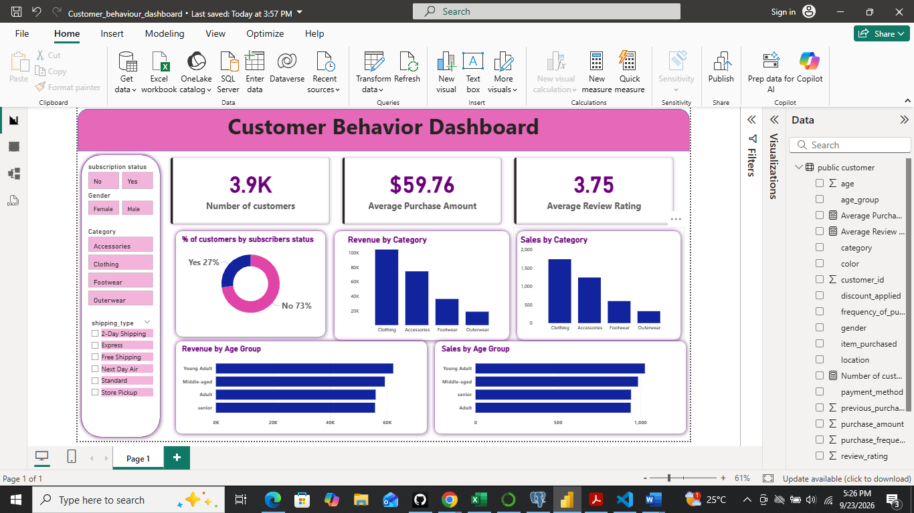

01
Data & programming
Python · Pandas · SQL · MySQL · PostgreSQL · Jupyter Notebook
FINANCE · DATA · INSIGHT
Open to finance and analytics opportunities
I'm Mercy Magut, a Financial Engineering graduate and data analytics professional interested in financial analysis, business intelligence, credit and risk analytics.
01 / ABOUT
I bring together a foundation in Financial Engineering and hands-on experience supporting finance, credit monitoring, reconciliations and reporting.
My interest is in using data to answer practical business questions: What is driving performance? Where are risks emerging? How can teams make more confident decisions? I work with tools such as SQL, Python, Excel and Power BI to clean, analyse and communicate data.
02 / TOOLKIT
Python · Pandas · SQL · MySQL · PostgreSQL · Jupyter Notebook
Power BI · Excel · PivotTables · dashboards · data visualisation
Data cleaning · exploratory analysis · statistical analysis · reporting · forecasting
Financial analysis · credit monitoring · loan portfolio analysis · reconciliations · accounts receivable
03 / SELECTED WORK
A selection of analytical projects demonstrating how I approach data preparation, exploration and communicating findings.

POWER BI / CUSTOMER INSIGHTSAnalysed 3,900 purchase records to explore customer segments, buying patterns and retention opportunities using Python, PostgreSQL and Power BI.
Exploring active Airbnb listings and neighbourhood-level patterns to understand the short-term rental market in Nairobi.
 EXCEL / SALES DASHBOARD
EXCEL / SALES DASHBOARDBuilt an interactive Excel dashboard to explore purchasing patterns across customer demographics, income and regions.
Used MySQL to clean and standardise a layoffs dataset, handle missing values and explore patterns across companies, industries and time.
Project descriptions summarise the work completed; detailed findings and visualisations are available in the linked repositories and reports.
04 / EXPERIENCE
Supported client-facing financial advisory activities and developed practical exposure to financial products and investment conversations.
Assisted with loan and creditworthiness processes, budgets, financial reports and forecasting support.
05 / EDUCATION
Jomo Kenyatta University of Agriculture and Technology (JKUAT)
ALX Africa · Professional Foundations certificate
06 / CONTACT
Interested in finance, data analysis or business intelligence opportunities? I'd be glad to connect.